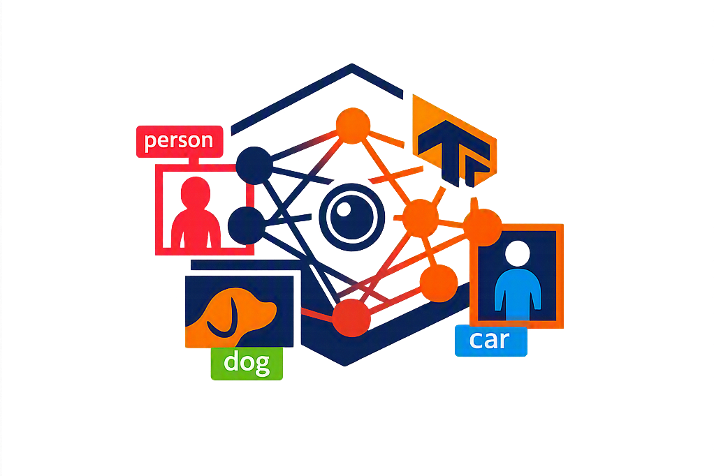
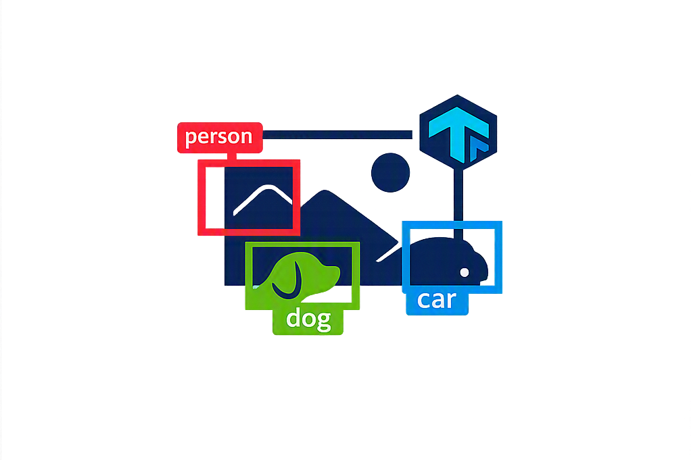

See Beyond The Image
Not just an image, but a universe of information waiting to be discovered.
Every frame tells a story, every detection reveals a new perspective. Object Scope uses artificial intelligence to analyze visual data and transform pixels into meaningful insights.
Object Scope — where artificial intelligence meets vision.AI Vision
Intelligent object recognition powered by modern deep learning.
Real-Time Detection
Detect objects instantly through your camera stream.
Smart Analysis
Convert images into valuable visual information.
Image Detection
Upload an image and let artificial intelligence analyze every detail. Object Scope uses advanced computer vision to identify objects, understand visual content, and provide accurate detection results from your images.
Start Image Detection
Camera Detection
Experience real-time object recognition through your camera. Object Scope uses artificial intelligence and computer vision to detect and analyze objects instantly from live video streams.
Start Camera Detection
Project Proposal
Explore the complete project proposal of Object Scope, including the project objectives, problem statement, system architecture, technologies, and future improvements.
This document provides detailed information about the development process and the artificial intelligence approach used in this project.
Object Scope Documentation
Artificial Intelligence
Computer Vision
TensorFlow.js & COCO-SSD
About Object Scope
Object Scope is an artificial intelligence powered computer vision platform designed to analyze visual data and transform images into meaningful information.
Built with TensorFlow.js and COCO-SSD, Object Scope brings real-time object detection directly to the browser without requiring additional software.
The platform allows users to explore image-based detection and live camera analysis through modern web technologies.
Object Scope — where artificial intelligence meets vision.Created By
Fouad Salehi
AI Powered
Advanced computer vision models running directly in the browser.
Browser Based
No installation required. Everything works through modern web technologies.
Real-Time Vision
Analyze images and camera streams with intelligent object recognition.
Technologies Used
 TensorFlow.js
TensorFlow.js
 GITHUB
GITHUB
 JavaScript
JavaScript
 CSS3
CSS3